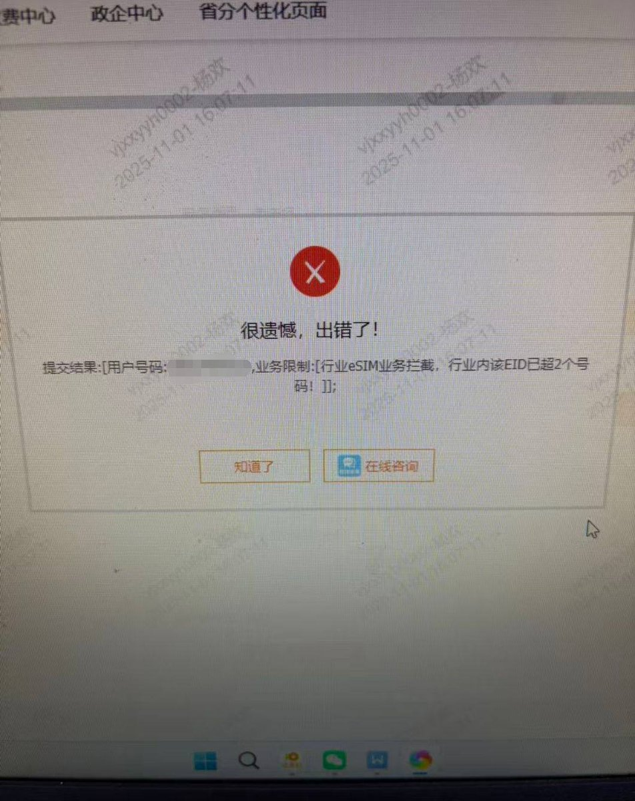

收二手的国行iPhone Air一定要留个心眼，看起来三大运营商的EID绑定数据是共通的，一旦该EID绑定了2个国内eSIM将出现业务拦截，无法办理业务。
若上一任机主在卖手机之前，没有将国内eSIM联网移除，那这台国行Air将加不了任何国内eSIM，只有让原机主将之前绑定的号码补成实体卡才能解绑。
别忘了每个EID还有写卡次数限制（每月新开eSIM号不超过2个，补换卡次数不超过5次），如果写卡次数用完了，解绑后也得次月才能再写卡。
最极端的情况，如果原机主不配合去补成实体卡，那它就只能写外卡eSIM，比外版iPhone多了个电子围栏。
* 国内eSIM指的是China CI（三大运营商各自的CA，交叉信任），外卡eSIM指的是GSMA CI（国际通用证书）
若上一任机主在卖手机之前，没有将国内eSIM联网移除，那这台国行Air将加不了任何国内eSIM，只有让原机主将之前绑定的号码补成实体卡才能解绑。
别忘了每个EID还有写卡次数限制（每月新开eSIM号不超过2个，补换卡次数不超过5次），如果写卡次数用完了，解绑后也得次月才能再写卡。
最极端的情况，如果原机主不配合去补成实体卡，那它就只能写外卡eSIM，比外版iPhone多了个电子围栏。
* 国内eSIM指的是China CI（三大运营商各自的CA，交叉信任），外卡eSIM指的是GSMA CI（国际通用证书）
